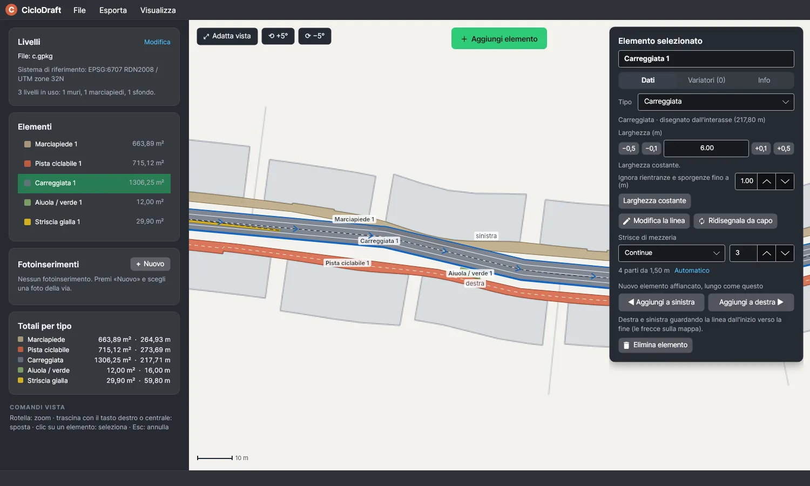
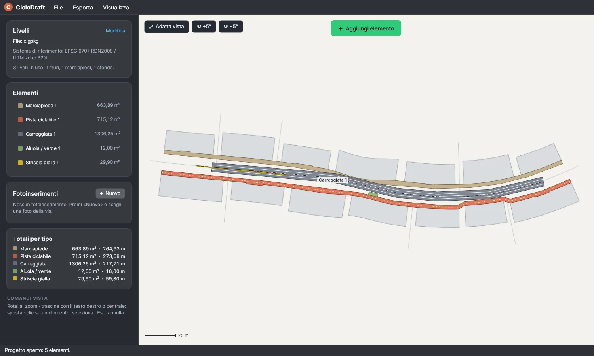
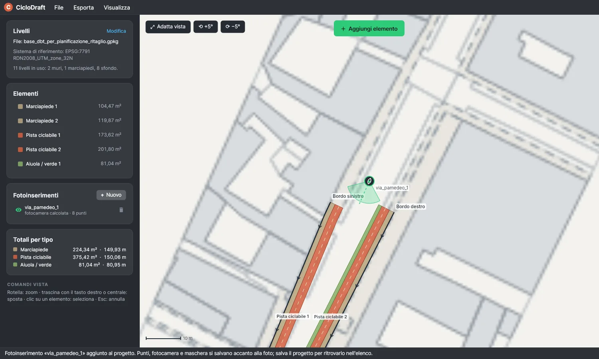

Ciclabili, marciapiedi e carreggiate, disegnati sui dati veri.
CicloDraft apre il GeoPackage della tua cartografia (anche il DBGT comunale), si aggancia ai muri degli edifici e ai marciapiedi esistenti e ti fa disegnare la nuova sezione stradale in metri. Poi esporti in DXF, in 3D e direttamente sulla foto della via.
Software libero (GPL v3) · Windows 10/11 e macOS (Apple Silicon e Intel) · funziona senza internet

Dalla cartografia al progetto, nello stesso programma
Ogni elemento è parametrico: cambi larghezza, tipo o tracciato e superfici, larghezze minime e massime, DXF e 3D si aggiornano da soli.
Tracciato o poligono
Disegni il bordo, l'interasse o il contorno: il punto si aggancia a muri, marciapiedi esistenti ed elementi già disegnati, e può seguirne il profilo.
Variatori di sezione
La larghezza cambia gradualmente tra due punti e resta cambiata dopo: allargamenti e restringimenti di 10 cm alla volta, con i capi da trascinare sulla mappa.
Elementi agganciati
Una ciclabile che costeggia due marciapiedi li segue quando si allargano. «Aggiungi a destra / a sinistra» crea in un clic un elemento affiancato, lungo come l'originale.
Misure sempre aggiornate
Estensione, superficie, larghezza minima, massima e media di ogni elemento e totali per tipo, pronti per il computo.
Fotoinserimento
Calcola la fotocamera da 6–8 punti di controllo e disegna il progetto in prospettiva sulla foto della via, con ombre, maschera e rimozione delle auto che coprono il tracciato.
Ritaglio dei dati grandi
Dal DBGT comunale (anche oltre 100 MB e 80 livelli) estrai solo l'area di progetto e i livelli utili: un GeoPackage leggero in meno di un secondo.
Un'interfaccia che ti guida passo per passo
Il riquadro con la cornice verde è sempre quello su cui agire; i comandi per l'elemento compaiono sopra la mappa solo quando servono.

Quattro passi, dal GeoPackage al disegno
Apri i dati
Un GeoPackage in coordinate metriche o un progetto .ciclo salvato. Per i file molto grandi c'è Ritaglia dati.
Conferma i livelli
Per ogni livello scegli il ruolo (muri, marciapiedi, sfondo, edifici 3D) e se vederlo: il programma li propone dal nome.
Aggiungi elementi
Scegli il tipo e la modalità, disegna sulla mappa, imposta la larghezza e premi Disegna.
Esporta
DXF per il CAD, CSV per il computo, GLB per il rendering e immagine del fotoinserimento.
Il progetto esce pronto per il prossimo passaggio
R12 in metri, nel sistema di riferimento del GeoPackage. Un layer per tipo, segnaletica, assi e testi con le misure.
glTF 2.0 con texture: facciate, cordoli, segnaletica, alberi e lampioni. Si apre in Blender, Twinmotion, Unreal, SketchUp.
Il progetto in prospettiva sulla foto, più un livello trasparente con il solo progetto per il fotoritocco.
Lunghezze, superfici e larghezze di tutti gli elementi, da aprire in Excel.

Il progetto sulla foto della via
Abbini qualche punto della foto alla mappa e CicloDraft ricostruisce posizione, direzione e obiettivo della fotocamera. Il progetto viene disegnato con texture, cordoli e segnaletica; gli edifici lo coprono dove serve e le ombre della foto vi si posano sopra.
- Tutti i fotoinserimenti restano nel progetto e si riaprono con un clic.
- Sulla mappa un occhio indica dove è stata scattata la foto e dove guarda.
- Rimuovi auto: le auto che toccano il tracciato vengono cancellate e la foto ricostruita (modelli ONNX, senza internet).
Pronto all'uso, senza installazione
Le versioni compilate sono nelle release del repository. La guida completa è nel wiki.
Windows
Un solo file, CicloDraft.exe: scaricalo e aprilo. Windows 10 o 11, 64 bit.
macOS
CicloDraft-mac-AppleSilicon.zip (M1–M4) o CicloDraft-mac-Intel.zip. L'app non è firmata: la prima volta, nel Terminale:
xattr -cr /Applications/CicloDraft.app codesign --force --deep --sign - /Applications/CicloDraft.appScarica per Mac
Dal codice
Con il .NET 8 SDK, su Windows, macOS o Linux:
git clone https://github.com/bugeo/ciclodraft cd ciclodraft dotnet run -c ReleaseVai al repository